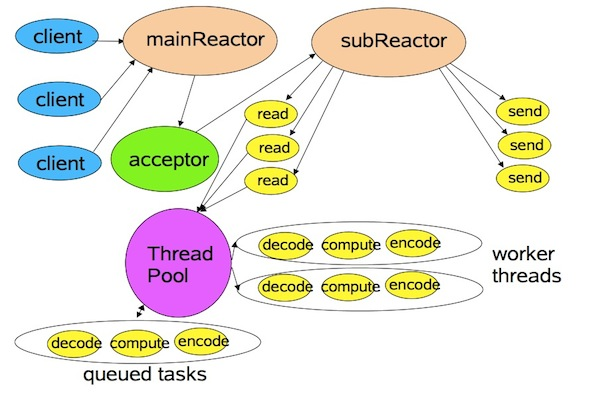

反应堆设计模式，为什么叫做反应堆
上图一个是核反应堆示意图，反应堆建筑里完成的工作就类似 netty 中的event loop，他们都是单线程的。而涡轮建筑物的工作是收集核能，然后 比如转化为电能输送给各个电站，这就是类似 event de-multiplexer。我想这就是为啥要叫这个名字。
先提提IO模式
值得注意的是，我们常说的'同步阻塞IO'模式中，同步和阻塞是完全独立的概念，不要混在一起理解！
阻塞和非阻塞
阻塞是指用户线程一直在等待，直到内核 IO 操作彻底完成，在这期间不能干别的事情。简单来说，就是线程执行一个函数时，一直等待到完全执行完成，在这之前一直等待
非阻塞是指用户线程拿到内核返回的状态值就返回自己的空间，干别的事情去了。简单来说，就是线程执行一个函数，立即返回，后续需要线程自己轮询查询函数的执行结果
同步和异步
同步是指用户空间主动发起请求给内核空间。
异步是指内核空间主动发起请求给用户空间。
这里只说同步非阻塞IO，根据以上概念，也就是用户空间发起请求给内核空间进行IO调用后立即返回，然后用户空间主动轮询查询IO调用结果
同步非阻塞IO的缺点
不断轮询内核，将会占用大量的 CPU 时间，浪费性能，效率低下，因此，在高并发的情况下，同步非阻塞模型也是不可用的。
为了解决轮询的缺点，
I/O 多路复用（ IO multiplexing）
多路IO，如果各用户空间都各自轮询，那对于内核将是灾难，同时代码也是低内聚的，因此需要引入系统调用select or epoll单独完成轮询逻辑
需要一个单线程或进程和系统调用select or epoll 交互来完成IO事件分发
更详细的解释请参考Linux IO模式及 select、poll、epoll详解
反应堆设计模式的特点
单线程处理IO
线程池处理IO事件
以上特点，可见该设计模式是面向IO编程，^_^
netty 的反应堆设计
由以上netty设计图可知，netty的IO核心
main reactor 负责与select or epoll 进行交互，监听IO就绪状态
sub reactor 负责IO的读与写